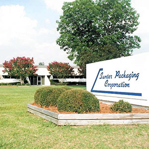
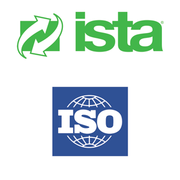
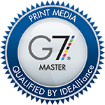

Sumter Packaging Corporation was founded in 1958 as Kankakee Container Company. In 1981, we expanded to our present headquarters in Sumter, South Carolina. Since that time, we have expanded to 4 locations serving the Carolinas, Georgia and Virginia with over 350,000 square feet of manufacturing and warehouse space. Sumter Packaging has been a family owned business for three generations and has been committed to continuous improvement for over 50 years. Sumter Packaging continues today to serve its customers through personal service and quality products with fast, dependable delivery.
service is at the very heart of what we do!
Our Customer Service Department is staffed with well trained customer service professionals whose desire is to exceed your expectations and ensure a smooth interface with Sumter Packaging Corporation. Customers are assigned to a sales representative responsible for a geographic region. Our customer service representative will work with you and the dedicated sales representative to ensure responsive service to your requirements from initial contact to delivery of the final product. Sumter Packaging Corporation's customer service representatives are a committed group of people willing to go above and beyond the call of duty to satisfy your requirements.
OUR QUALITY POLICY: WE AT SUMTER PACKAGING WILL PERFORM AND CONTINUALLY IMPROVE OUR SERVICES, TO DESIGN, MANUFACTURE AND DELIVER OUR PRODUCTS, TO CONFORM TO THE REQUIREMENTS OF OUR CUSTOMERS.
FIVE SECONDS. That is how long we have to grab the consumer's attention. So your product package has to be perfect. We take this responsibility very seriously. Our quality assurance measures are infused through every step and every stage of our creative, manufacturing, and delivery processes.

As part of Sumter Packaging's commitment to quality, we maintain a fully certified ISTA lab for both 1A and 1B testing. Our testing lab is continuously kept at a controlled environment with a 50% humidity level and 73 degree temperature to ensure consistent, accurate results. Services performed in our testing lab include: Burst Strength Testing (Mullen Test), Basis Weight Testing, and Edge Crush Testing (ECT). We also have, available on-site, an Incline Impact Tester, Rotary Motion Vibration Table, and a Drop Leaf Tester.
Our test lab professionals have also completed UN / Hazardous Materials ("Hazmat") training and would be happy to work with you to coordinate UN / Hazmat testing for your packaging through an independent certified hazmat testing laboratory.
As an AS9100 & ISO 9001 registered company, SUMTER PACKAGING CORPORATION has taken the steps to ensure that we have the documentation and controls in place needed to provide the consistent quality corrugated Containers that our customers, and their customers, demand.
Our quality assurance technicians keep a constant watch over every detail in the process, from the front door to the back. Every machine operator knows, follows and documents detailed quality instructions.

Our certification as a G7 Master Printer means that we use sophisticated prepress technologies, press controls, proofing and on-press measurements in order to ensure a visual match from proof to print. This is yet another step that we take to ensure our customers' peace-of-mind.
Sumter Packaging cares about the environment! We make a conscientious effort to help reduce paper waste, by recycling and reusing, on average, 78% of our recycled material!
The corrugated industry is focused on continuously improving all the ways our processes and products interact with the environment, from forest management to recovery and recycling at the end of each corrugated package's useful life.
93% of corrugated boxes are made with material supplied by the Sustainable Forestry Initiative (SFI) program participants. Corrugated is the most recycled packaging material today with 78.3% of all containers produced being recovered for recycling (25.2 million tons). The average corrugated box consists of 43% recycled fiber.
• Remove - eliminate unnecessary packaging.
• Reduce - "right-size" packaging and optimize material strength.
• Reuse - pallets and reusable plastic containers.
• Renew - use materials made of renewable resources.
• Recycle - recycle materials used in manufacturing and use materials made of recycled content.
• Revenue - achieve all of the above at cost savings.
• Read - get educated and educate the workforce.